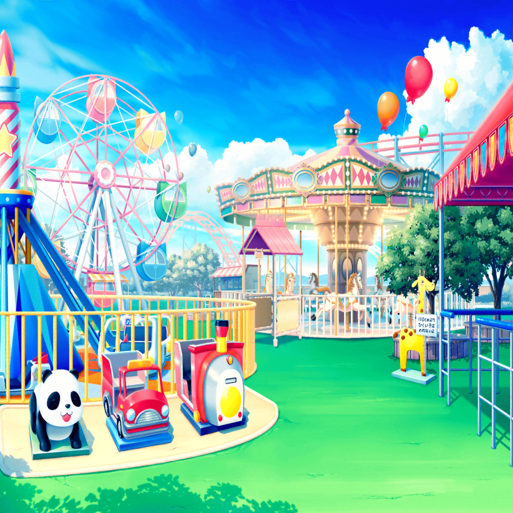
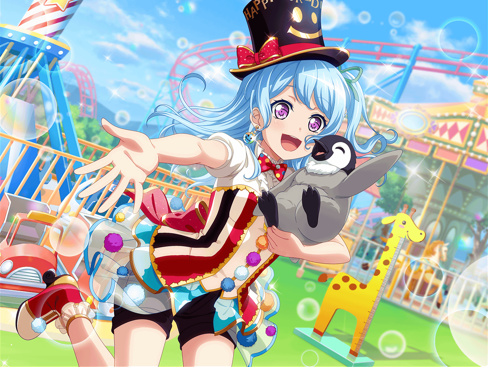
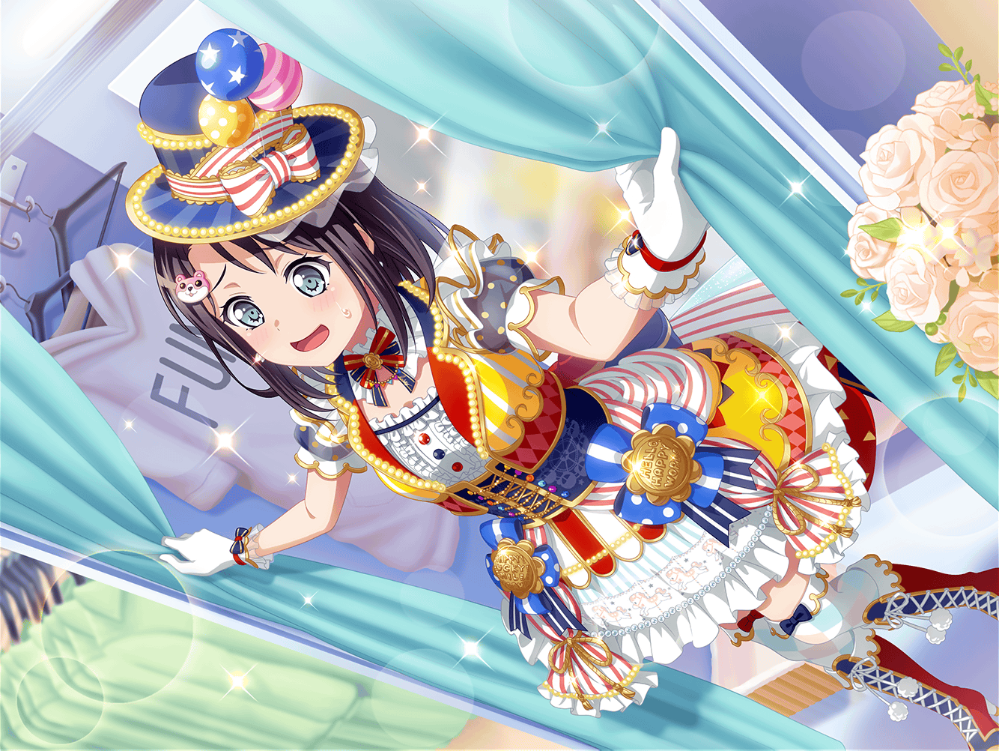

イベント当日
花咲川スマイル遊園地
ミッシェル・マリー
花咲川スマイル遊園地へようこそ〜！
ミッシェル
今日は�、ふわキャラのみんなが
スマイル遊園地に遊びに来てくれたよ〜！
マリー
いい子のみんな〜！
たくさんふわキャラのお友達を作ってね〜！
あかり
わあ！ ミッシェルだ〜！ マリーもいる〜！
ミッシェル
えっ、あかりちゃん！？
ビックリした〜、元気そうだね
マリー
えへへ、はぐみが遊びに来てって誘ったんだ〜！
あかり
はぐみちゃんが楽しいイベントをするよって誘ってくれたの。
友達も連れて来たよ。ねぇ、ふわキャラの他には何があるの？
マリー
いろいろあるよ！ ほら、見て！
あっちには移動水族館が来てるんだ！

花音
か、かわいいペンギンさんと遊べますよ〜！
よかったら見に来てください〜！
花音
うう、大きい声出すの恥ずかしい……
ペンちゃん
キュウウウウウ
花音
励ましてくれるの？
今日はよろしくね、ペンちゃん
怪盗ハロハッピー
集え、聡明なる者よ。
怪盗ハロハッピーの謎を解き明かしてみたまえ
こころ
こっちでは宝探しツアーをしてるわよ！
わくわくでドキドキの宝探しを一緒に楽しみましょ！
来場客A
海賊の洞窟……？
こんなアトラクション、今まであったっけ……？
来場客B
微妙な遊園地だと思ってたけど、
こんなイベントやったりするんだなー
来場客C
またこういうイベントやるなら、チェックしなきゃ！
美咲
お客さん、思ったよりたくさん来てくれたね
こころ
ええ、遊園地中が笑顔でいっぱいね！
みんな喜んでくれて嬉しいわ！
遊園地の社長
なんてことだ……！
スマイル遊園地にこんなにお客さんが来るなんて……！
こころ
どう、社長さん？
やろうと思えば、どんな場所だって楽しい場所にできるでしょ！
遊園地の社長
……君達の言う通りだったね。
お客さんが楽しいと思えるものをすれば
受け入れてもらえるか……
遊園地の社長
私は遊園地の枠にとらわれていたのかもしれない。
閉園を考える前にやれることはやっておくよ……！
はぐみ
社長さんがメラメラ燃えてる……！
気合いと根性でファイトだよー！！
薫
消えかけていた情熱の炎が再び灯った……
今日はこの遊園地の儚い記念日になるね
花音
遊園地スマイル作戦……うまくいったのかな？
こころ
もちろん！ 大成功よ！
美咲
はいはい、気持ちはわかるけど気は抜かないように。
まだ夜のパレードライブが残ってるよ
こころ
大丈夫、わかってるわ！
パレードも成功させて、みんなを笑顔にしましょ！
花音
そういえば、パレードの準備をしないとだね。
衣装の着替えもあるし、そろそろ行こうか
こころ
楽しみにしてて、美咲！
パレードのために新しい衣装を作ったのよ！
美咲
えっ、そんなの作ってたんだ？
こころ
せっかくのパレードだもの！
楽しくて笑顔になれるぴったりの衣装にしようと思ったの！
美咲
へぇー……
美咲
（まあ、あたしの場合、何着てもミッシェルなんだけどね……）

花咲川スマイル遊園地 スタッフ控え室
こころ
じゃーん！ 見て見て！ どうかしら！
花音
ふふ、よく似合ってるよ、こころちゃん
はぐみ
なんだか遊園地みたいで楽しい衣装だね！
はぐみ、この衣装すっごく好き！
薫
ところで、美咲はどこだい？
お姫様はまだドレスアップの真っ最中かな？

美咲
その、ここにいますけどー……
花音
美咲ちゃん……！
美咲
いえ、何も言わなくてもわかってます！
この衣装のことですよね！
美咲
あたしも状況がよく飲み込めてないんですけど、
黒服の人達がミッシェルじゃなくてこっちをって……
花音
わかってるよ。私達が美咲ちゃんの分の衣装もお願いしたんだ
美咲
え……？
薫
ハロハピにはもう一人素敵な仲間がいる……
そのことをみんなに見せたいと思ってね
はぐみ
みーくんもハロハピの仲間だもん！
みんなで一緒にステージに立ちたいよ！
こころ
美咲もパレードに出ましょう！
今夜はパレードライブ！ 特別な日よ！
美咲
いやいや、あたしが出たらミッシェルはどうすんの……
花音
……私は美咲ちゃんとしてステージに立つのもいいと思う
美咲
え……？
花音
美咲ちゃんがそうしたいなら、
美咲ちゃんとしてステージに立っていいんじゃないかな
花音
ミッシェルは出られなくなっちゃうけど、
美咲ちゃんもメンバーなんだし……
花音
私も美咲ちゃんと一緒に立てたらって思ってるよ
美咲
花音さん……